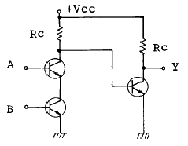
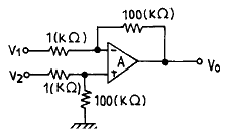
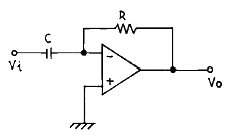
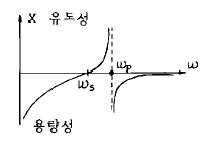
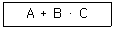
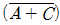
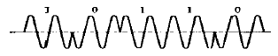
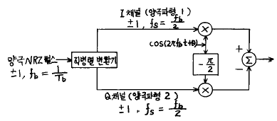

정보통신산업기사 (2002-09-08 기출문제)
1과목: 디지털전자회로
1. 트랜지스터의 활성영역에서 베이스 접지시 전류증폭율 α 가 0.98, 역포화 전류 Ico가 100[㎂], 베이스 전류가 IB = 10[㎃]일 때, 콜렉터 전류 Ic는?
- 495[㎃]
- 49.5[㎃]
- 4.9[㎂]
- 0.5[㎂]
(정답률: 알수없음)

2. 플립플롭을 구성하는데 주로 이용되는 회로는?
- 쌍안정 멀티바이브레이터
- 단안정 멀티바이브레이터
- 비안정 멀티바이브레이터
- 무안정 멀티바이브레이터
(정답률: 알수없음)
3. 다음 중 그 값이 작을수록 좋은 것은?
- 증폭기 바이어스 회로의 안정계수
- 차동 증폭기의 동상신호 제거비(CMRR)
- 증폭기의 신호대 잡음비
- 정류기의 정류효율
(정답률: 알수없음)
4. 정논리회로에서의 다음 트랜지스터 회로의 기능은?

- OR회로
- AND회로
- NAND회로
- EOR회로
(정답률: 알수없음)
5. 전가산기(full adder)의 입출력 구조는?
- 입력 2개, 출력 2개
- 입력 3개, 출력 2개
- 출력 3개, 입력 2개
- 출력 3개, 입력 3개
(정답률: 알수없음)
6. 전원회로에서 무부하시 600[V], 부하시 500[V] 였다면 전압변동률은 얼마인가?
- 20%
- 30%
- 35%
- 45%
(정답률: 알수없음)
7. 다음 연산 증폭기에서 출력 전압의 크기는?

- Vo = 100(V2 - V1)
- Vo = V2 + V1
- Vo = 99(V1 - V2)
- Vo = V2 - V1
(정답률: 알수없음)
8. 다음 그림의 회로는 무슨 회로인가?

- 미분기
- 적분기
- 가산기
- 증폭기
(정답률: 알수없음)
9. 수정발진회로가 갖는 가장 큰 특징은?
- 잡음의 경감
- 출력의 증대
- 효율의 증대
- 발진주파수의 안정
(정답률: 알수없음)
10. 다음은 수정편의 리액턴스 특성이다. 발진에 이용될 주파수 범위는?

- ωS ＜ ω ＜ ωP
- ωP ＜ ω
- ωS ＜ ω
- ωS ＞ ω ＞ ωP
(정답률: 알수없음)
11. 변조도가 100[%]인 AM파의 출력 전력이 6[KW]라면 반송파 성분의 전력은 얼마인가?
- 2[KW]
- 4[KW]
- 8[KW]
- 12[KW]
(정답률: 알수없음)
12. 주파수 3[㎑]로 3[㎒]의 반송파를 주파수 변조하였을 때 최대 주파수 편이가 ± 75[㎑]라면 소요 대역폭은?
- 225[㎑]
- 156[㎑]
- 150[㎑]
- 112.5[㎑]
(정답률: 알수없음)
13. 두개의 입력이 동시에 1 이 되었을 때에도 불확실한 출력상태가 되지 않도록 두개의 Flip-Flop을 사용한 회로는?
- RS F-F
- D F-F
- Master slave F-F
- T F-F
(정답률: 알수없음)
14. R-S Flip-Flop을 J-K Flip-Flop으로 만들고자 할 때 필요한 게이트(gate)는?
- OR gate 2개
- AND gate 2개
- NOR gate 2개
- NAND gate 2개
(정답률: 알수없음)
15. 다음 중 연산 증폭기의 특성과 관련 없는 것은?
- 높은 이득
- 낮은 CMRR
- 높은 입력 임피던스
- 낮은 출력 임피던스
(정답률: 알수없음)
16. 다음 부울대수식과 등가인 것은?

- A·B·(A+C)
- (A+B)·(A+C)
- (A+B)·A·C
- (A+B)·

(정답률: 알수없음)
17. 발진이 생성될 수 있는 기본조건은?
- 회로의 증폭률이 최소 5 이상 필요하다.
- 증폭기에 부궤환회로를 부가한다.
- 공진결합회로가 필요하다.
- 증폭기에 정궤환회로를 부가한다.
(정답률: 알수없음)
18. PLL의 구성에 불필요한 것은?
- 위상검출기(PD)
- 전압제어 발진기(VCO)
- 저역통과필터(LPF)
- 자동주파수 제어(AFC)
(정답률: 알수없음)
19. 다음 논리 회로 중 팬 아웃(fan out)의 수가 많은 회로는?
- DTL 게이트
- TTL 게이트
- RTL 게이트
- DL 게이트
(정답률: 알수없음)
20. 다음 중 레지스터의 기능은?
- 펄스 발생기이다.
- 카운터의 대용으로 쓰인다.
- 회로를 동기시킨다.
- 데이터를 일시 저장한다.
(정답률: 알수없음)
2과목: 정보통신기기
21. 변복조기(MODEM)의 기능을 설명한 것이다. 설명이 옳지 않는 것은?
- 전송매체를 통해서 데이터를 전송하는데 필요한 기기이다.
- 디지털 신호를 아날로그 회선에서 전송이 적합하도록 변조하여 준다.
- 디지털 신호를 복류신호로 전송하기 위한 정보 통신기기이다.
- 아날로그 신호를 디지털 신호로 복조하여 주는 정보 통신기기이다.
(정답률: 알수없음)
22. 다음은 터미널 기능을 구분한 것중 터미널의 입출력 기능으로 구분할 수 있는 것은?
- 출력변환기능
- 입출력제어기능
- 에러제어기능
- 송수신제어기능
(정답률: 알수없음)
23. 다음 마이크로파 중계방식 중에 수신한 마이크로파를 증폭하기 쉬운 주파수로 변환하여 충분히 증폭한 다음 다시 마이크로파로 변환하여 송신하는 장치는 어떤 중계방식인가?
- 무급전 중계방식
- 헤테로다인 중계방식
- 검파 중계방식
- 직접 중계방식
(정답률: 알수없음)
24. 교환기에서 발신 전화기로 호의 접속 진행 상태를 알리는 가청음 신호가 아닌 것은?
- 점유신호
- 발신음
- 호출음
- 폭주신호
(정답률: 알수없음)
25. 비디오 텍스의 국제표준 기술방식이 아닌 것은?
- 알파 모자이크 방식
- 알파 지오 메트릭 방식
- 알파 캡틴 방식
- 알파 포토 그래픽 방식
(정답률: 알수없음)
26. 다음 중 집중화기(concentrator)의 특징을 잘못 설명한 것은?
- 후처리 프로세서는 집중화기의 특별한 경우이다.
- 부호변환, 속도변환을 실행한다.
- 망의 신뢰도를 향상시킨다.
- 망으로부터 고속선로로 가는 트래픽을 평준화 한다.
(정답률: 알수없음)
27. 정보화 사회에서 정보통신망의 최종적인 발전단계는?
- 패킷 교환망 구축
- 디지털 전용회선 구축
- 종합정보통신망(ISDN) 구축
- 광대역 데이터 전용회선 구축
(정답률: 알수없음)
28. 그림, 챠트, 도표, 설계도면을 읽어 이를 디지털화 하여 컴퓨터에 입력시키는 자료 입력 기기는?
- 터치스크린
- 디지타이저
- 라이트 펜
- 테블릿
(정답률: 알수없음)
29. 현재 사용되는 대부분의 팩시밀리의 전송방식은?
- G3
- G2
- G1
- G0
(정답률: 알수없음)
30. 다음의 포트공동이용기와 모뎀공동이용기의 설명 중 틀린 것은?
- 두 가지 모두 하나의 포트를 이용하는 점에서는 동일하다.
- 모뎀공동이용기를 이용하는 단말기는 서로 먼 거리에 있어도 된다.
- 포트공동이용기는 단말기의 설치 장소에 제약을 받지 않는다.
- 포트공동이용기를 이용하는 경우 선로의 고장시 모든 단말기가 운영 불능이 된다.
(정답률: 알수없음)
31. TV 방송전파를 이용하여 TV 방송과 함께 문자 또는 도형 형태의 정보를 제공하는 정보통신 서비스는?
- 텔리텍스
- 팩시밀리
- 텔리텍스트
- 위성통신
(정답률: 알수없음)
32. 코드분할 다원 접속인 CDMA의 장점이 아닌 것은?
- 페이딩과 간섭에 강한 특성을 보인다.
- 보안성이 높아 도청하기 어렵다.
- 소프트 통화 채널 전환이 가능하다.
- 주파수 사용효율이 낮다.
(정답률: 알수없음)
33. 기존의 전화선을 이용하여 고속데이터 전송이 가능한 기술은?
- Cable MODEM
- ADSL
- WLL
- CDMA
(정답률: 알수없음)
34. 다음 중에 인터넷의 web 서비스를 받을 수 있는 통신 방식은?
- HDTV
- CATV
- telex
- Electronic Board
(정답률: 알수없음)
35. 송신기의 성능지수에 해당하는 것은?
- 영상주파수선택도
- 잡음억압감도
- 상호변조
- 점유주파수 대역폭
(정답률: 알수없음)
36. 2개의 음성대역 통신회선을 이용하여 19.2Kbps의 전송량을 전송하고자 할 때 가장 경제적인 방식은?
- 동기식 모뎀
- 복합 모뎀
- 역 다중화기
- 지능 다중화기
(정답률: 알수없음)
37. 어떤 특정 상호간만을 연결한 TV 통신시스템에 의하여 호텔, 병원, 학교 같은 특정대상에게 특정한 프로그램을 제공하는 시스템은?
- CATV
- CCTV
- VRS
- HDTV
(정답률: 알수없음)
38. 다음 중 발신 전용 무선통신 방식을 의미하는 것은?
- CT1
- CT2
- CT3
- CT4
(정답률: 알수없음)
39. 컴퓨터에서 처리된 문자, 도형, 그림등으로 구성된 정보를 보관, 검색하기 위하여 작은 면적에 대량의 정보를 아날로그 형태로 저장할 수 있는 장치는?
- OCR
- COM
- MICR
- CIM
(정답률: 알수없음)
40. 다음 중 최초의 상업 통신 위성은?
- INTELSAT
- SPUTNIK
- TAIROS
- ALPHANET
(정답률: 알수없음)
3과목: 정보전송개론
41. 디지털변조에 의해 디지털신호를 주어진 주파수대역내의 신호로 변환시켜 전송하는 방식은?
- 반송대역전송
- 베이스밴드전송
- PCM전송
- DSB전송
(정답률: 알수없음)
42. 부호를 구성하고 있는 비트가 1초간에 몇개 전송 되는가를 표시하는 척도는?
- 데이타 신호속도
- 변조속도
- 데이타 동기속도
- 베어러(beare)속도
(정답률: 알수없음)
43. 레일리 산란에 관한 것으로 잘못된 설명은?
- λ2에 비례한다.
- 파장이 길수록 레일리 산란손실은 적다.
- 광섬유 유리중 파장보다도 미소한 굴절률의 흔들림에 의해 일어나는 것이다.
- 전송되는 모드 및 코어의 직경과 무관하다.
(정답률: 알수없음)
44. ARQ의 종류가 아닌 것은?
- stop and wait ARQ
- continuous ARQ
- discrete ARQ
- adaptive ARQ
(정답률: 46%)
45. 단일모드 광섬유의 설명으로 틀린 것은?
- 모드 내에 간섭이 일어난다.
- 고속 대용량의전송이 가능하다.
- 코어 내를 전파하는 모드는 HE11 만 존재한다.
- 코어의 직경이 3∼10[㎛]로 제조 및 접속하기가 어렵다.
(정답률: 알수없음)
46. 비트의 평균에너지대 잡음전력비 (Eb/No)가 동일한 경우 오류확률이 가장 낮은 변조방식은? (단, 모두 동기식 검파를 가정한다.)
- BPSK
- QPSK
- 8-PSK
- 16-PSK
(정답률: 알수없음)
47. 데이터 신호속도가 2400bps일 경우, 이것을 4상 위상편이 변조(PSK)하여 전송한다면 변조속도는 얼마인가?
- 600[baud]
- 1200[baud]
- 2400[baud]
- 4800[baud]
(정답률: 알수없음)
48. 다음의 그림은 어떤 변조파형인가?

- 진폭천이변조
- 위치천이변조
- 주파수천이변조
- 위상천이변조
(정답률: 알수없음)
49. 반복주기가 일정한 펄스의 시간폭을 신호파의 진폭에 대응하여 변화시키는 방식은?
- PAM
- PWM
- PPM
- PCM
(정답률: 알수없음)
50. 전송로의 진폭왜곡이나 위상왜곡에 의해 발생하는 부호간 간섭(ISI)의 영향을 감소시키는 장치는?
- 분주기
- 증폭기
- 감쇠기
- 등화기
(정답률: 알수없음)
51. 다음중 광통신용 발광소자는?
- LD
- PD
- APD
- LAP
(정답률: 알수없음)
52. 광파이버의 전송특성의 하나인 불순물이온에 의해 생기는 광손실은?
- 흡수손실
- 산란손실
- 마이크로밴딩손실
- 굽힘손실
(정답률: 알수없음)
53. 엔트로피율에 대한 다음 설명중 잘못된 것은?
- 평균 정보량을 의미한다.
- 정보율이라고도 한다.
- 단위로는 [bps]를 사용한다.
- 기호속도와 엔트로피를 곱하여 얻을 수 있다.
(정답률: 알수없음)
54. HDLC 프로토콜에서 사용되는 국(station)의 이름을 바르게 나타낸 것은?
- 주국, 종국, 종속국
- 총괄국, 집중국, 단국
- 1차국, 2차국, 복합국
- 상위국, 중간국, 하위국
(정답률: 알수없음)
55. 데이터전송 중에 각종 잡음에 의해 부호가 오류(error)가 발생할 때 이를 검출하여 정정하는 오류제어방식중 수신측에서 오류를 체크하여 정정하는 방식의 종류는?
- 패리티체크방식, 정 MARK-SPACE 방식
- 반송조합방식, 체크부호반송방식
- 병렬전송방식, 반복전송방식
- 해밍(HAMMING)부호방식, BCH부호 방식
(정답률: 알수없음)
56. 송신측에서 블록부호화하여 전송한 경우, 수신측에서 원래의 정보를 복호하기 위해 사용되는 행렬은?
- 생성 행렬(generator matrix)
- 해밍거리 행렬(Hamming distance matrix)
- 패리티 검사 행렬(parity check matrix)
- 신드롬 행렬(syndrom matrix)
(정답률: 알수없음)
57. MODEM에서 T=833絨10-6초의 단위펄스가 4개의 독립적인 변조파를 갖는 4위상 변복조 방식에 의하여 표시될 때에 전송되는 비트수를 나타내는 데이타 신호속도는 몇[bps]인가?
- 1200
- 2400
- 3600
- 4800
(정답률: 알수없음)
58. 유리 광섬유에서 손실을 일으키는 원인이 아닌 것은?
- 모드혼합
- 흡수
- 산란
- 기하학적 영향
(정답률: 알수없음)
59. 중계기의 구성요소가 아닌 것은?
- 등화증폭회로
- 식별회로
- 타이밍회로
- 위상검출기
(정답률: 알수없음)
60. 다음 그림의 발생기는 어떤 신호를 발생하는가?

- PSK
- DPSK
- QPSK
- OQPSK
(정답률: 알수없음)
4과목: 전자계산기일반 및 정보설비기준
61. 전화용 시외자동교환기 누화감쇄량의 한계치는 얼마인가?
- 50[dB] 이상
- 55[dB] 이상
- 60[dB] 이상
- 68[dB] 이상
(정답률: 알수없음)
62. 다음 중 정보통신공사업법령상의 정보통신기술자의 등급에 해당되지 않는 것은?
- 하급기술자
- 중급기술자
- 고급기술자
- 특급기술자
(정답률: 알수없음)
63. 전자계산기에서 계산속도가 빠른 단위 순서대로 나열된 것은?
- ps-ns-μs-ms
- μs-ps-ns-ms
- ms-μs-ns-ps
- ms-ns-μs-ps
(정답률: 알수없음)
64. 입출력장치와 마이크로프로세서 사이의 접속장치(Interface)에서 악수하기 (Handshaking)라는 뜻은?
- CPU의 병렬데이터를 I/O장치에 맞추어 직렬 데이터로 변환하기
- CPU와 I/O 장치 사이의 제어신호 교환하기
- I/O장치의 전압높이를 CPU에 맞추기
- CPU가 사용하지 않는 버스를 I/O 장치에서 제어하기
(정답률: 알수없음)
65. 마이크로프로세서의 주소지정방식중 옳지 않은 것은?
- 즉치주소방식(immediate addressing)
- 간접주소방식(indirect addressing)
- 참조주소방식(reference addressing)
- 인덱스주소방식(indexing addressing)
(정답률: 알수없음)
66. 컴퓨터 등 정보처리능력을 가진 장치에 의하여 전자적인 형태로 작성되어 송.수신 또는 저장된 문서형식으로 표준화된 것을 무엇이라고 하는가?
- 정보 토큰버스
- 사이버 몰
- 전자문서
- 전산자료
(정답률: 알수없음)
67. 정보통신망에 관련된 기술기준의 제정목적으로 적합하지 않은 것은?
- 기술 및 기기의 호환성 확보
- 기기의 연동성 확보
- 망의 안정성· 신뢰성 확보
- 전산망에 관련된 신기술개발의 기반 확보
(정답률: 알수없음)
68. 컴퓨터 시스템 성능 평가 요인들 중 해당되지 않는 것은?
- program size
- reliability
- throughput
- turnaround time
(정답률: 알수없음)
69. 전기통신기본법에서 정하는 전기통신사업자의 구분으로 올바른 것은?
- 공중통신사업자, 별정통신사업자, 부가통신사업자
- 기간통신사업자, 별정통신사업자, 부가통신사업자
- 기간통신사업자, 일반통신사업자, 별정통신사업자
- 기간통신사업자, 공중통신사업자, 부가통신사업자
(정답률: 알수없음)
70. 2진수 0111을 그레이 코드(Gray code)로 바꾸면 무엇인가?
- 1010
- 0100
- 0000
- 1111
(정답률: 알수없음)
71. 선형 리스트중 마지막으로 입력한 자료가 제일 먼저 출력되는 LiFO(Last in first out)구조는?
- 트리
- 스택
- 큐
- 섹터
(정답률: 알수없음)
72. ASCII 코드에서 존(ZONE) 비트로 사용되는 비트의 수는?
- 1
- 2
- 3
- 4
(정답률: 알수없음)
73. 통신공사업자의 시행공사에 대한 완전한 공사품질확보를 위한 정보통신부장관의 감독권 규정으로 공사중지명령 사유가 아닌 것은?
- 공사를 공정계획보다 일부 지연될 때
- 부실공사가 우려될 때
- 수급공사 범위를 초과할 때
- 하도급 규정을 위반할 때
(정답률: 알수없음)
74. 정보통신부장관은 전기통신역무의 효율적 제공을 위하여 필요한 경우 전기통신사업자간의 업무영역을 조정할 수 있다. 다음 중 전기통신 업무영역의 조정기준으로 틀린 것은?
- 전기통신 역무의 내용
- 전기통신 역무의 수익성
- 전기통신 사업경영의 효율성
- 전기통신 사업의 기술적 관련성
(정답률: 알수없음)
75. 다음 중 기간통신역무의 종류가 아닌 것은?
- 전화역무
- 가입전신역무
- 전기통신회선설비 임대역무
- 온라인 정보처리역무
(정답률: 알수없음)
76. 서브루틴에 대한 설명으로 틀린 것은?
- 자주 사용되는 일련의 프로그램은 서브루틴으로 구성한다.
- 인터럽트 발생시의 처리프로그램은 서브루틴으로 구성한다.
- 일반적으로 I/O 프로그램은 서브루틴으로 구성한다.
- 부프로그램은 주프로그램과 동시에 수행되도록 서브 루틴으로 구성한다.
(정답률: 알수없음)
77. 다음 중 비트오율을 설명한 것은?
- 통신회선의 중심점과 대지와의 사이에 발생되는 전압
- 하나의 전력을 1밀리와트에 대한 대수비로 표시한것
- 송신된 비트수에 대한 잘못 수신된 비트수의 비율
- 전신부호의 소자의 길이가 늘어나거나 짧아지는 비율
(정답률: 알수없음)
78. 전기통신기본법의 목적이 아닌 것은?
- 전기통신의 효율적 관리
- 전기통신역무의 효율적인 제공 및 이용
- 전기통신의 발전 촉진
- 공공의 복리증진
(정답률: 알수없음)
79. 컴퓨터 시스템에서 명령형식을 보통 1-주소방식, 2-주소방식, 3-주소방식으로 분류하는 기준이 되는 것은?
- 기억 장치의 용량
- 명령어의 수
- 오퍼랜드의 수
- 레지스터의 수
(정답률: 알수없음)
80. 다음 중에서 일반적으로 프로그램을 수행하는데 필요하지 않는 장치는 어느 것인가?
- 보조기억장치
- 연산장치
- 제어장치
- 기억장치
(정답률: 알수없음)
Ic = 0.98 × 10[㎃] + 100[㎂] = 11.8[㎃]
하지만 이 값은 베이스 전류 IB가 10[㎃]일 때의 값이므로, 실제 콜렉터 전류는 이보다 더 큰 값이 나올 것입니다.
따라서, 콜렉터 전류 Ic는 약 495[㎃]이 됩니다.